Deciduous trees, up to m tall.
ಎಲೆಯುದುರು ಮಾದರಿಯ……… ಮೀ. ಎತ್ತರದವರೆಗಿನ ಮರಗಳು.
Deciduous trees, up to m tall.
இலையுதிர் மரம், 8 மீ. உயரம் வரை வளரக்கூடியது.
Bark brownish grey, smooth; blaze greenish.
ತೊಗಟೆ ಕಂದು ಮಿಶ್ರಿತ ಬೂದು ಬಣ್ಣದಲ್ಲಿದ್ದು, ನಯವಾಗಿರುತ್ತದೆ;ಕಚ್ಚು ಮಾಡಿದ ಜಾಗ ಹಸಿರು ಛಾಯೆ ಹೊಂದಿರುತ್ತದೆ.
Bark brownish grey, smooth; blaze greenish.
மரத்தின் பட்டை ப்ரவுன் நிறமானது சாம்பல் நிறமானது, வழுவழுப்பானது; உள்பட்டை பச்சை நிறமானது.
Young branchlets angular to subterete, glabrous.
ಎಳೆಯ ಕಿರುಕೊಂಬೆಗಳು ಕೋನಯುಕ್ತದಿಂದ ದುಂಡಾಗಿರುವ ಮಾದರಿಯಲ್ಲಿದ್ದು, ರೋಮರಹಿತವಾಗಿರುತ್ತವೆ.
Young branchlets angular to subterete, glabrous.
சிறிய நுனிக்கிளைகள் குறுக்குவெட்டுத் தோற்றத்தில் கோணங்களுடையது முதல் கிட்டதட்ட வளையமானது, உரோமங்களற்றது.
Leaves simple, alternate, distichous; stipule lateral, persistent; petiole ca. 0.1 cm long, glabrous; lamina 1-1.5 x 0.3-0.5 cm, oblong, apex obtuse with mucronate tip, base asymmetric and truncate, margin thick and revolute, coriaceous, glaucous beneath, glabrous; midrib flat above; secondary_nerves 6-8 pairs; tertiary_nerves brodly reticulate or obscure.
ಎಲೆಗಳು ಸರಳವಾಗಿದ್ದು, ಪರ್ಯಾಯ ಜೋಡನಾ ವ್ಯವಸ್ಥೆಯಲ್ಲಿದ್ದು ಕಾಂಡದ ಎರಡೂ ಕಡೆ ಎದುರು ಬದರಿನ ಲಂಬ ಸಾಲಿನಲ್ಲಿರುತ್ತವೆ;ಕಾವಿನೆಲೆಗಳು ಪಾರ್ಶ್ವದಲ್ಲಿದ್ದು ಶಾಶ್ವತವಾಗಿ ಉಳಿಯುವಂತಹವು;ತೊಟ್ಟುಗಳು ಅಂದಾಜು 0.1 ಸೆಂ.ಮೀ. ವರೆಗಿನ ಉದ್ದವಿದ್ದು ರೋಮರಹಿತವಾಗಿರುತ್ತವೆ;ಪತ್ರಗಳು 1 – 1.5 X 0.3 – 0.5 ಸೆಂ.ಮೀ. ಗಾತ್ರ ಹೊಂದಿದ್ದು ಚತುರಸ್ರದ ಆಕಾರ ಹೊಂದಿದ್ದು, ಅಗ್ರದಲ್ಲಿ ಮೊನಚುಮುಳ್ಳನ್ನು ಹೊಂದಿದ ಚೂಪಲ್ಲದ ಮಾದರಿಯ ತುದಿ, ಅಸಮ್ಮಿತಿಯಾದ ಮತ್ತು ಛಿನ್ನಾಗ್ರ ಮಾದರಿಯ ಬುಡ, ಮಂದವಾದ ಮತ್ತು ಹಿಂಚಾಚಿದ ಅಂಚು,ತೊಗಲನ್ನೋಲುವ ಮೇಲ್ಮೈ ಹೊಂದಿರುತ್ತವೆ,ಪತ್ರದ ತಳಭಾಗ ಮಾಸಲು ಬೂದು ಹಸಿರು ಬಣ್ಣದಲ್ಲಿದ್ದು ರೋಮರಹಿತವಾಗಿರುತ್ತವೆ; ಮಧ್ಯನಾಳ ಮೇಲ್ಭಾಗದಲ್ಲಿ ಚಪ್ಪಟೆಯಾಗಿರುತ್ತದೆ; ಎರಡನೇ ದರ್ಜೆಯ ನಾಳಗಳು 6 ರಿಂದ 8 ಜೋಡಿಗಳಿರುತ್ತವೆ;ಮೂರನೇ ದರ್ಜೆಯ ನಾಳಗಳು ವಿಶಾಲ ಜಾಲಬಂಧ ನಾಳ ವಿನ್ಯಾಸದಲ್ಲಿರುತ್ತವೆ ಅಥವಾ ಅಸ್ಪಷ್ಟವಾಗಿರುತ್ತವೆ.
Leaves simple, alternate, distichous; stipule lateral, persistent; petiole ca. 0.1 cm long, glabrous; lamina 1-1.5 x 0.3-0.5 cm, oblong, apex obtuse with mucronate tip, base asymmetric and truncate, margin thick and revolute, coriaceous, glaucous beneath, glabrous; midrib flat above; secondary_nerves 6-8 pairs; tertiary_nerves brodly reticulate or obscure.
இலைகள் தனித்தவை, மாற்றுஅடுக்கமானவை, இருநெடுக்கு வரிசையிலையடுக்கம் (டைஸ்டிக்கஸ்); இலையடிச்செதில் பக்கவாட்டில் அமைந்தவை, நிரந்தரமானது; இலைக்காம்பு 0.1 செ.மீ. நீளமானது, உரோமங்களற்றது; இலை அலகு 1-1.5 X 0.3-0.5 செ.மீ., நீள்சதுர வடிவானது, அலகின் நுனி மெட்டையானதுடன் அதன் முனை மூயூக்கரனேட், அலகின் தளம் சமமற்றது மற்றும் சதுர வடிவானது, அலகின் விளிம்பு தடித்தவை மற்றும் பின்புறம் வளைந்து (ரெவலுட்) காணப்படும், கோரியேசியஸ், அலகின் கீழ்பரப்பு மெழுகு பூசியது போன்றது அல்லது சாம்பல் கலந்த நீல நிறமானது (க்களாக்கஸ்), உரோமங்களற்றது; மையநரம்பு மேற்புறத்தில் அலகின் பரப்பிற்கு சமமானது; இரண்டாம் நிலை நரம்புகள் 6-8 ஜோடிகள்; மூன்றாம் நிலை நரம்புகள் அகன்ற வலைப்பின்னல் போன்றவை அல்லது கண்களுக்கு புலப்படாது.
Inflorescence axillary cymes or solitary; flowers unisexual, whitish.
ಪುಷ್ಪಮಂಜರಿ ಅಕ್ಷಾಕಂಕುಳಿನಲ್ಲಿನ ಮಧ್ಯಾರಂಭಿ ಮಾದರಿಯಲ್ಲಿರುತ್ತವೆ ಅಥವಾ ಹೂಗಳು ಒಂಟಿಯಾಗಿರುತ್ತವೆ;ಹೂಗಳು ಏಕಲಿಂಗಿಗಳಾಗಿದ್ದು ಬಿಳಿ ಬಣ್ಣದವು.
Inflorescence axillary cymes or solitary; flowers unisexual, whitish.
மஞ்சரி இலைக்கோணங்களில் காணப்படுபவை, சைம் வகை மஞ்சரி அல்லது தனித்தவை; மலர்கள் ஓர் பாலானவை, வெள்ளை நிறமானது.
Capsule, smooth, trilocular, obovoid, purplish black; seeds 6.
ಸಂಪುಟ ಫಲಗಳು ನಯವಾಗಿದ್ದು, 3-ಕೋಶಗಳನ್ನೊಳಗೊಂಡಿರುತ್ತವೆ, ಬುಗುರಿಯ ಆಕಾರದಲ್ಲಿರುತ್ತವೆ,ಕೆನ್ನೀಲಿ ಮಿಶ್ರಿತ ಕಪ್ಪು ಬಣ್ಣದಲ್ಲಿರುತ್ತವೆ;ಬೀಜಗಳ ಸಂಖ್ಯೆ 6.
Capsule, smooth, trilocular, obovoid, purplish black; seeds 6.
வெடிகனி (கேப்சியூல்), வழுவழுப்பானது, 3-அறைகளுடையது, தலைகீழ் முட்டை வடிவானது, பர்புள்-கருப்பு நிறமானது; விதைகள் 6.
 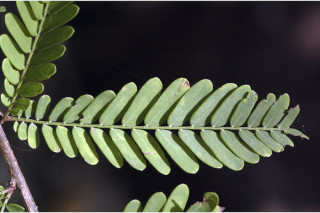
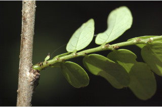
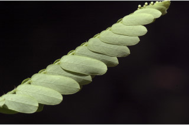
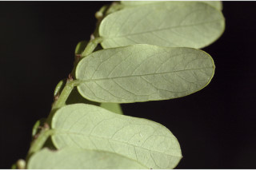
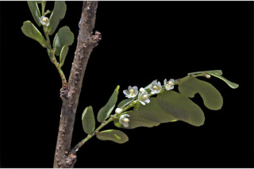
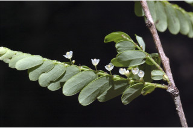
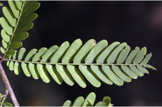
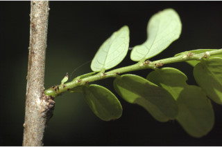
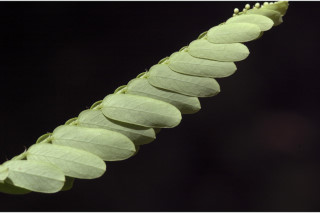
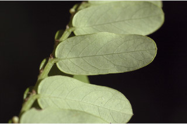
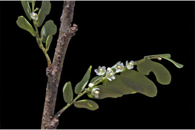
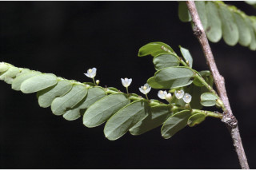